RNAdistribution plots the distribution of dicer-derived
sRNA classes (20-24nt) across samples or across the sRNA consensus
determined by the function [mobileRNA::RNAconsensus()].
Usage
RNAdistribution(
data,
samples = NULL,
style = c("bar", "line", "consensus"),
facet = TRUE,
facet.arrange = 3,
colour = "darkblue",
together = TRUE,
consensus = FALSE,
relative = FALSE
)Arguments
- data
a dataframe, on which one of the following functions has already been called: [mobileRNA::RNAimport()],[mobileRNA::RNAconsensus()].
- samples
character vector. Store names of samples to analyse and plot. Argument is required for plotting individual sample replicates, either individually, overlapped together or in a facet. Use the sample replicate names present in the data frame (`data`), select samples you wish to plot. Is not required when plotting the sRNA consensus using the argument
total=TRUE.- style
plotting option to choose the style of either a line graph or bar chart to represent your data. * Where
style="line"a line graph will be produced * Wherestyle="bar"produces a bar graph * Wherestyle="consensus"produces the line graph for the consenus sRNA in conjunction withconsensus=TRUE- facet
Logical; forms a matrix of panels defined by row and column faceting variables. It plots the results for each sample as a bar-chart and contains it within a single plot. The number of rows in the facet can be changed using the argument
facet.arrange. Defaultfacet = TRUE, plot each sample separately whenfacet = FALSE.- facet.arrange
numeric; value supplied to define the number of columns to include in the facet. This argument is piped into the ` ncol` argument in [ggplot2::facet_wrap()] to define the number of columns. By default, this is set to 3.
- colour
bar plot fill colour. Default colour is "darkblue".
- together
Logical; forms a single line graph with multiple lines each to represent the sample replicates. Default
together=TRUE.- consensus
Logical; plots the distribution of sRNA classes across all identified dicer-derived clusters based on the consensus. See [mobileRNA::RNAconsensus()] function to calculate consensus RNA class based the experimental replicates. Default
consensus=FALSE.- relative
Logical; calculates relative frequency of consensus dicer-derived sRNA clusters. Only applicable when only in conjunction with argument `consensus`, when set as
consensus=TRUE. As default,relative=FALSE.
Value
The function returns a list containing the results in the form of a data frame and the plot(s). To access an element, simply use the "$" symbol, and the elements "data" and "plot" will appear. The `samples` argument allows uses to plot specific samples in a single plot (facet bar plot or line graph). This can encourage closer comparison between sample replicates.
Details
The function can be used to plot a variety of different comparisons and plots.
It can be used to plot the distribution of sRNA classes within each sample
replicate, which can be represented as a bar chart style="bar" or a
line graph style="line". These plots can be represented individually or
in a single plot facet facet="TRUE" by default.
To plot the sRNA dicer-derived clusters identified in each sample, the function extracts the information from the RNA summary data and calculates the total number of each RNA class identified within a sample, for all samples.
Alternatively, the function allows you to plot the line graph for each sample
together, overlapped on a single graph total="TRUE". This is not an
option for bar plots.
The final option, is to plot the total consensus of dicer-derived sRNA clusters across the experimental conditions, the function pulls the consensus call from the column created by the [RNAconsensus()] function in the working data frame.
Examples
data('sRNA_data')
p1 <- RNAdistribution(data = sRNA_data, style = "line")
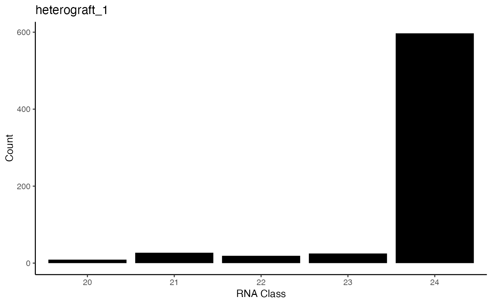
p1.2 <- RNAdistribution(data = sRNA_data, style = "line",
samples = c("TomEgg_1", "TomEgg_2", "TomEgg_3"))
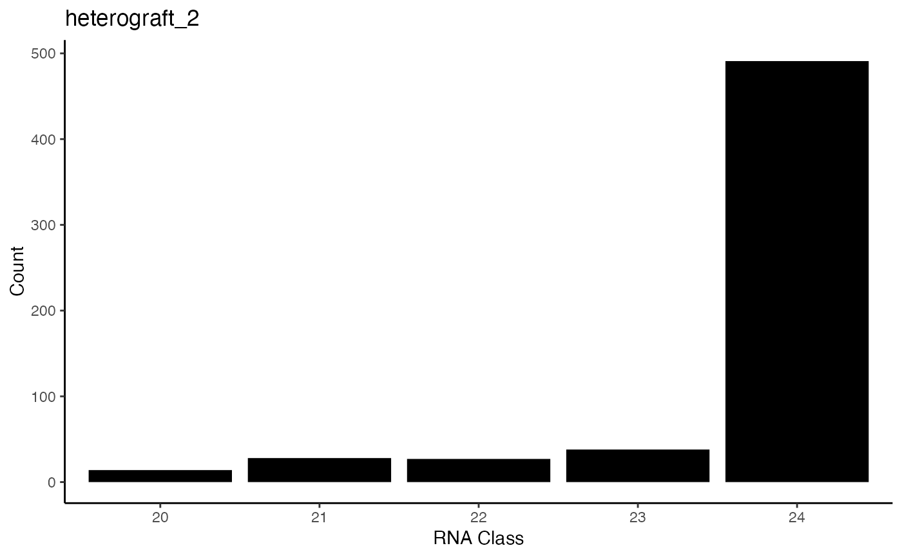
p2 <- RNAdistribution(data = sRNA_data, style = "line", together =FALSE )
#> Printing plots as facet for samples
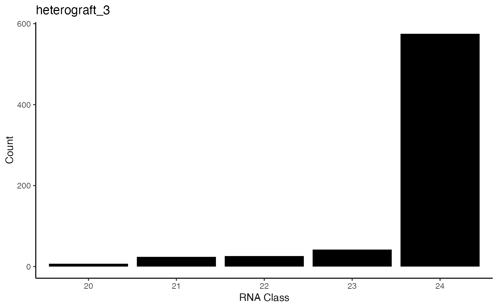
p3 <- RNAdistribution(data = sRNA_data, style = "bar")
#> Printing plots as facet for samples: TomEgg_1, TomEgg_2, TomEgg_3, TomTom_1, TomTom_2, TomTom_3
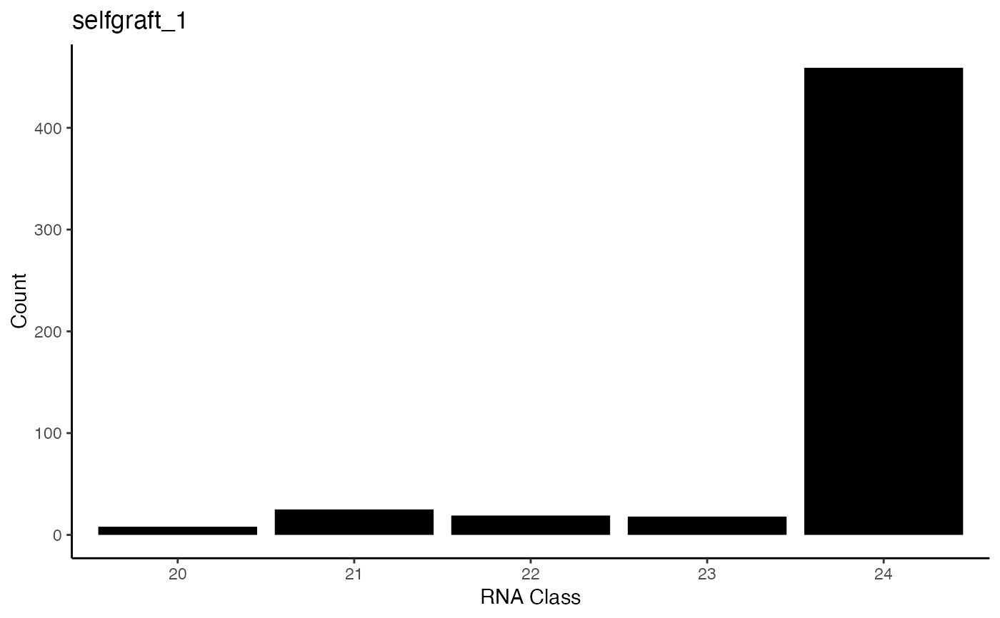
#> Class TomEgg_1 TomEgg_2 TomEgg_3 TomTom_1 TomTom_2 TomTom_3
#> 1: 20 1684 1407 1303 2489 3099 1921
#> 2: 21 4893 4523 4152 5583 6074 4380
#> 3: 22 4746 4780 4746 6476 6463 4674
#> 4: 23 20420 17104 19629 26991 28826 20827
#> 5: 24 126558 110332 115618 140056 115277 109911
p3.2 <- RNAdistribution(data = sRNA_data, style = "bar",
samples = c("TomEgg_1", "TomEgg_2", "TomEgg_3"))
#> Printing plots as facet for samples: TomEgg_1, TomEgg_2, TomEgg_3, TomTom_1, TomTom_2, TomTom_3
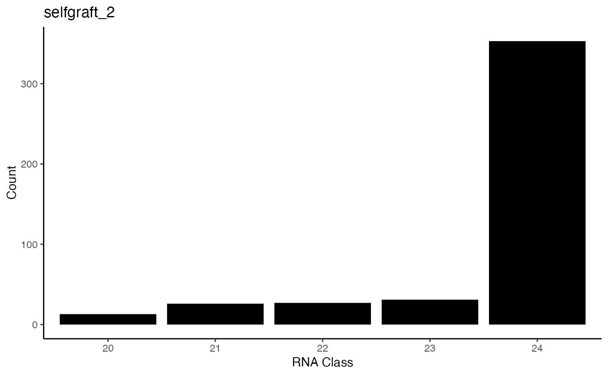
#> Class TomTom_1 TomTom_2 TomTom_3
#> 1: 20 2489 3099 1921
#> 2: 21 5583 6074 4380
#> 3: 22 6476 6463 4674
#> 4: 23 26991 28826 20827
#> 5: 24 140056 115277 109911
p4 <- RNAdistribution(data = sRNA_data, style = "bar", facet = FALSE)
#> Printing plots for samples: TomEgg_1, TomEgg_2, TomEgg_3, TomTom_1, TomTom_2, TomTom_3
#> $TomEgg_1
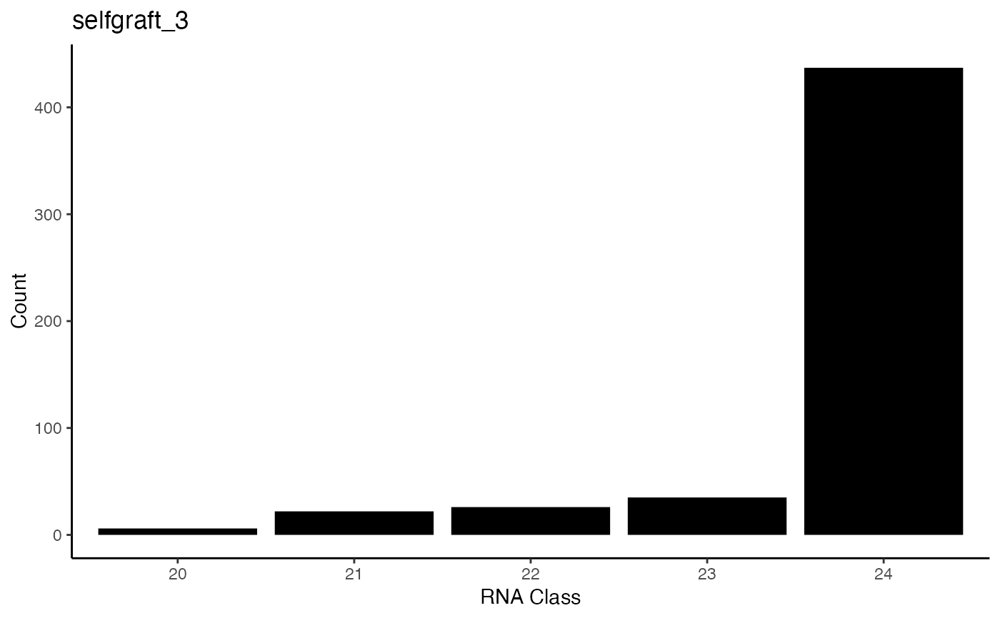
#>
#> $TomEgg_2
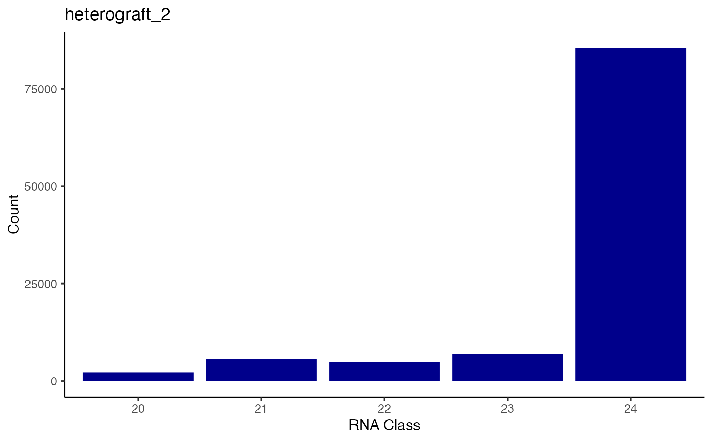
#>
#> $TomEgg_3
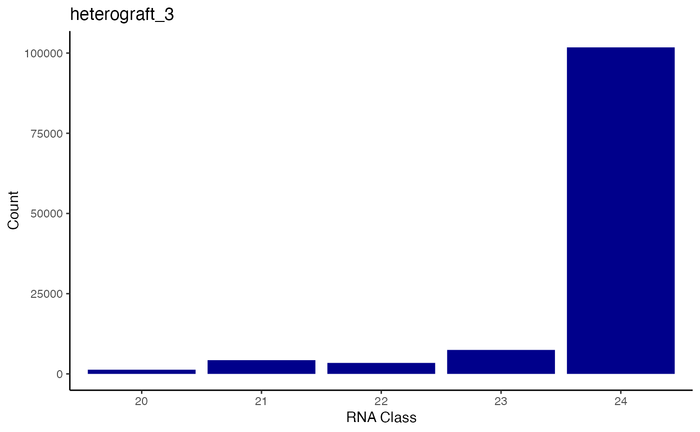
#>
#> $TomTom_1
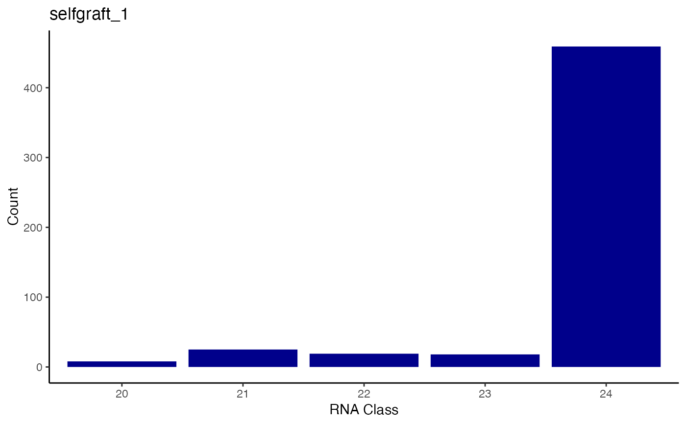
#>
#> $TomTom_2
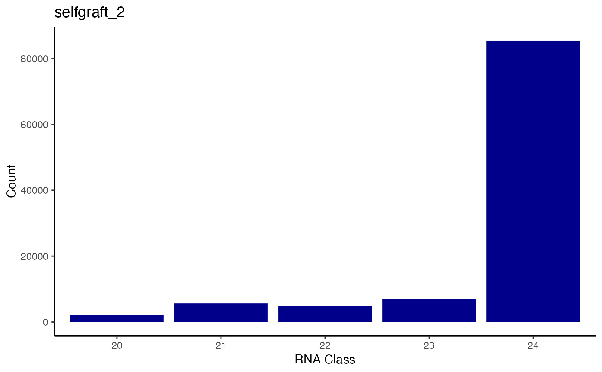
#>
#> $TomTom_3
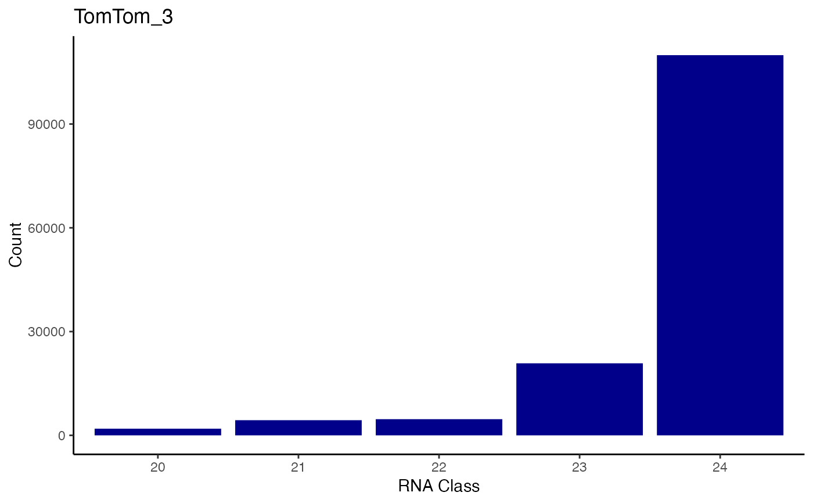
#>
#> Class TomEgg_1 TomEgg_2 TomEgg_3 TomTom_1 TomTom_2 TomTom_3
#> 1: 20 1684 1407 1303 2489 3099 1921
#> 2: 21 4893 4523 4152 5583 6074 4380
#> 3: 22 4746 4780 4746 6476 6463 4674
#> 4: 23 20420 17104 19629 26991 28826 20827
#> 5: 24 126558 110332 115618 140056 115277 109911
p5 <- RNAdistribution(data = sRNA_data, style = "bar",
facet = TRUE, facet.arrange = 2 )
#> Printing plots as facet for samples: TomEgg_1, TomEgg_2, TomEgg_3, TomTom_1, TomTom_2, TomTom_3
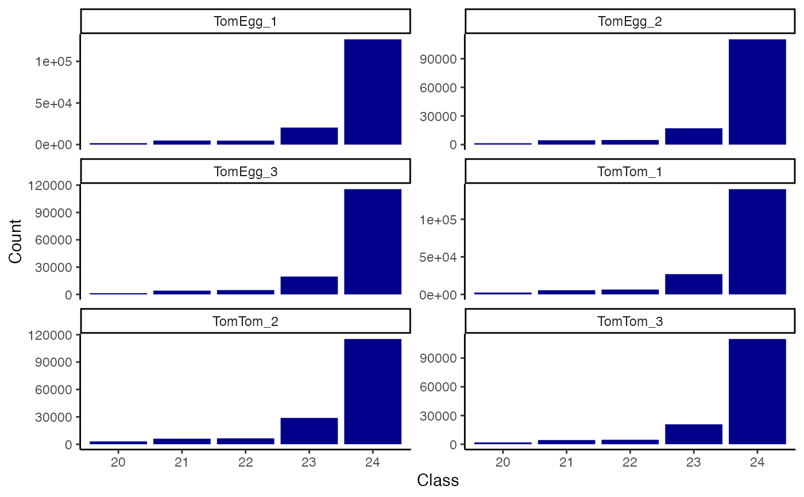
#> Class TomEgg_1 TomEgg_2 TomEgg_3 TomTom_1 TomTom_2 TomTom_3
#> 1: 20 1684 1407 1303 2489 3099 1921
#> 2: 21 4893 4523 4152 5583 6074 4380
#> 3: 22 4746 4780 4746 6476 6463 4674
#> 4: 23 20420 17104 19629 26991 28826 20827
#> 5: 24 126558 110332 115618 140056 115277 109911
data("sRNA_data_summary")
p6 <- RNAdistribution(data = sRNA_data_summary, style = "consensus", consensus = TRUE)